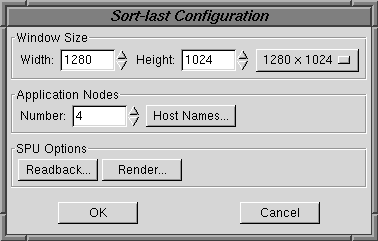

When you create a sort-last template you'll be prompted to enter the number of application (rendering) nodes and the desired window size (width and height in pixels).
Clicking on the Edit Template button will open the sort-last editor, shown here:

The dialog lets you specify the window size, the number and names of the rendering nodes and set the readback and render SPU options